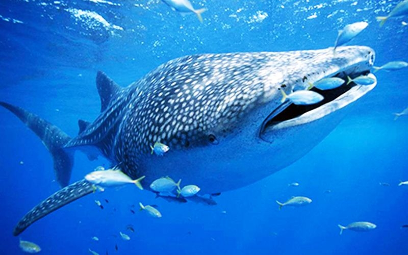
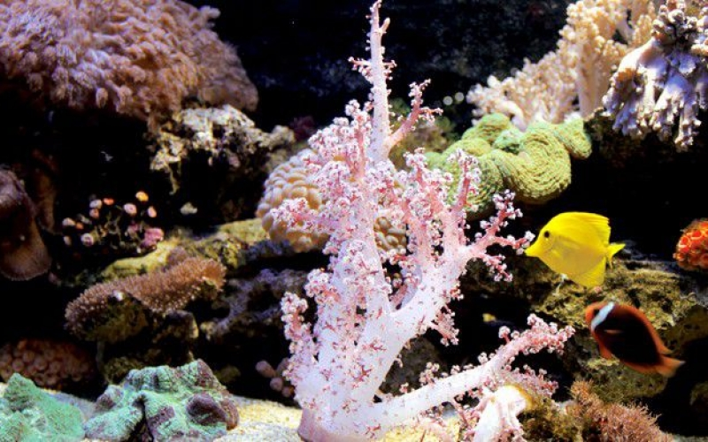
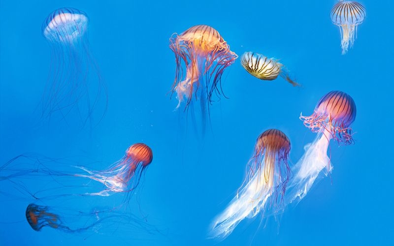
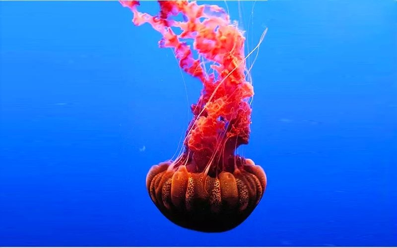
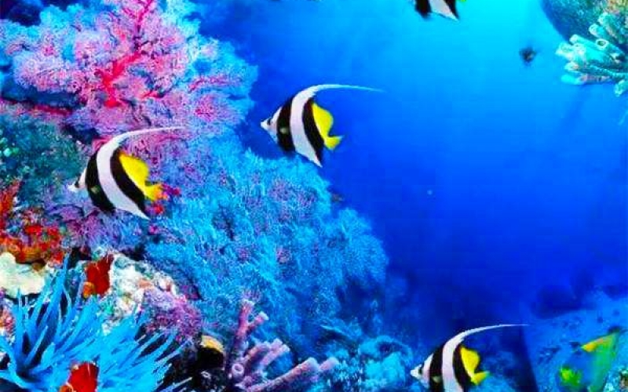

-
 生命起源于海洋？
生命起源于海洋？地球上的生命是如何诞生的，这个问题一直让科学家难以解释。多年来科学家一直在研究关于地球生命的起源，并提出了包括“原始汤”起源说、海底热液起源说、黏土起源说等众多假说。其中，地球生命起源于海洋一直是科学界的主流看法。 生命或诞生于“原始汤” 科学家认为，在距今...
2017-06-19 admin 448
-

温柔的鲸鲨
近日，山东省烟台市的渔民意外发现一条长约4.5米、宽约1.5米、重达1.5吨重的死亡鲸鲨。由于鲸鲨属于国家二级保护动物，不能在市场上随意买卖，渔民便将这条鲸鲨送往一家海洋动物馆制作标本。 鲸鲨属于软骨鱼纲须鲨目鲸鲨科，是世界上最大的鲨鱼，也是目前世界上体型最...
2017-06-19 admin 135
-

为什么珊瑚会白化
美国国家海洋和大气管理局（NOAA）6月21日公布分析结果称，今夏美国夏威夷及密克罗尼西亚联邦等太平洋广泛区域内或将出现导致珊瑚死亡的大规模白化现象。 珊瑚白化就是珊瑚颜色变白的现象。珊瑚本身是白色的，在正常的情况下，珊瑚呈现绿、蓝、黄、褐、红、紫等各种不同...
2017-06-19 admin 77
-

贝壳有坚硬的外壳，为何是软体动物？
前不久，天津的小学生邹明峻去水上公园游玩时，发现东湖附近的多块大石头上，有一些疑似古生物的化石“嵌”在其中。 天津自然博物馆的专家仔细观察后表示，这些的确是化石。据介绍，这些是远古海洋软体动物化石，属于头足纲中的角石类，化石中的远古海洋软体动物生活在距今4亿...
2017-06-19 admin 66
-

水母 海洋中的"精灵"
在海洋的世界里，最漂亮的当然非水母莫属。水母常常以其美丽的外表吸引着人们的眼球，其娇弱的身体和飘逸的触手，就像是游动在海洋中的“精灵”。水母不仅在海洋中随处可见，在一些淡水湖泊中也能够发现它们的踪迹，这里让我们欣赏几种奇特的水母。 黑色海荨麻 黑色海荨麻是...
2017-06-19 admin 46
-

谁是最"懒"的海洋动物？
海洋中最“懒”的动物，非藤壶莫属了。藤壶是附着在海边岩石上的一簇簇灰白色、有石灰质外壳的小动物。它的形状有点像马的牙齿，所以生活在海边的人们常叫它“马牙”。藤壶不但能附着在礁石上，而且能附着在船体上，任凭风吹浪打也冲刷不掉。藤壶在每一次脱皮之后，就要分泌出一种...
2017-06-19 admin 31
.jpg)